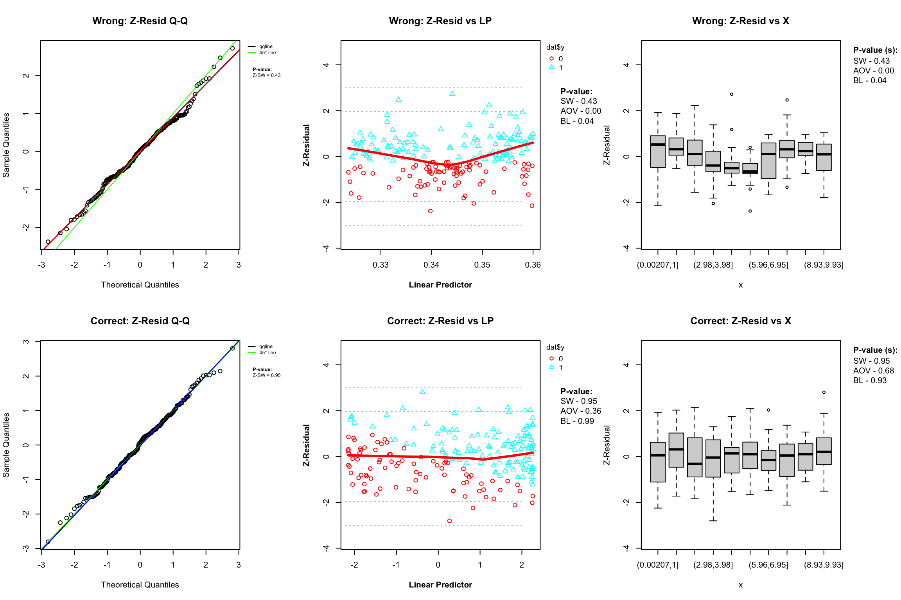
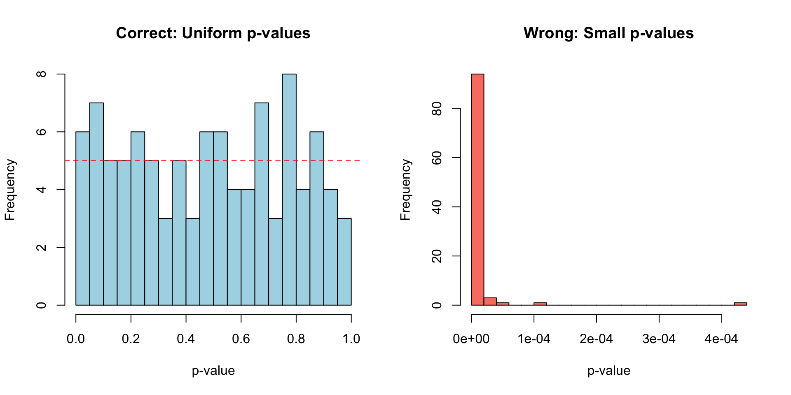

Code
suppressWarnings(unloadNamespace("Zresidual"))
library(Zresidual)
suppressWarnings(unloadNamespace("Zresidual"))
library(Zresidual)Because Zresidual provides native support for models fitted via the base R glm() function, we do not need to construct a custom predictive function. We can jump straight into simulating our dataset.
We simulate a dataset where the true log-odds follow a sine wave. With x \in [0, 10], the average log-odds are near zero, naturally keeping prevalence \approx 0.5.
We compare a Wrong Model (assuming a linear relationship) against a Correct Model (specifying the sine term).
# 1. Wrong Model (Linear)
fit_wrong <- glm(y ~ x, family = binomial(), data = dat)
# 2. Correct Model (Non-linear)
fit_correct <- glm(y ~ sin(x), family = binomial(), data = dat)
# Calculate Z-residuals using the built-in predictive backend (10 replicates each).
# Covariates (zcov) are computed internally.
z_wrong <- Zresidual(fit_wrong, data = dat, randomized = TRUE, nrep = 10)
z_correct <- Zresidual(fit_correct, data = dat, randomized = TRUE, nrep = 10)The plots below display the diagnostics for a single set of Z-residuals.
# Change this value (1 to 10) to see other replicated plots
i <- 1
# Set up 2 rows (Wrong vs Correct) and 3 columns (QQ, Scatter, Box)
par(mfrow = c(2, 3), mar = c(4, 4, 3, 1))
# --- ROW 1: WRONG MODEL (Linear) ---
# 1. Q-Q Plot
qqnorm(z_wrong, irep = i, main = "Wrong: Z-Resid Q-Q")
qqline(as.vector(z_wrong[, i]), col = "red")
# 2. Scatter Plot (Note the wave pattern in the residuals)
plot(z_wrong, x_axis_var = "lp", category = dat$y,
irep = i, add_lowess = TRUE, main = "Wrong: Z-Resid vs LP")
# 3. Boxplot
boxplot(z_wrong, x_axis_var = "x", num.bin = 10,
irep = i, main = "Wrong: Z-Resid vs X")
# --- ROW 2: CORRECT MODEL (Non-linear) ---
# 1. Q-Q Plot
qqnorm(z_correct, irep = i, main = "Correct: Z-Resid Q-Q")
qqline(as.vector(z_correct[, i]), col = "blue")
# 2. Scatter Plot (Residuals look like random noise)
plot(z_correct, x_axis_var = "lp", category = dat$y,
irep = i, add_lowess = TRUE, main = "Correct: Z-Resid vs LP")
# 3. Boxplot
boxplot(z_correct, x_axis_var = "x", num.bin = 10,
irep = i, main = "Correct: Z-Resid vs X")
Note: To inspect different realizations of the randomized residuals, change the value of
i(theirepindex) in the code chunk above.
Replicated p-values of the same fitted models
library(knitr)
library(kableExtra)
# 1. Create the data frame
res_table <- data.frame(
"Replicate" = paste("Rep", 1:ncol(z_wrong)),
"SW_W" = as.numeric(sw.test.zresid(z_wrong)),
"AOV_W" = as.numeric(aov.test.zresid(z_wrong, X = "x")),
"BL_W" = as.numeric(bartlett.test.zresid(z_wrong, X = "x")),
"SW_C" = as.numeric(sw.test.zresid(z_correct)),
"AOV_C" = as.numeric(aov.test.zresid(z_correct, X = "x")),
"BL_C" = as.numeric(bartlett.test.zresid(z_correct, X = "x"))
)
# 2. Render with minimalistic styling and spanning headers
res_table %>%
kable(
digits = 4,
# Base column names (the bottom row of the header)
col.names = c("Replicate", "SW", "AOV", "Bartlett", "SW", "AOV", "Bartlett"),
caption = "Diagnostic Test p-values Across Randomized Replicates",
align = "lcccccc"
) %>%
kable_styling(
bootstrap_options = c("striped", "condensed"),
full_width = FALSE,
position = "center"
) %>%
# Add the spanning header (the top row)
add_header_above(c(" " = 1, "Wrong Model (Linear)" = 3, "Correct Model (Non-linear)" = 3))| Replicate | SW | AOV | Bartlett | SW | AOV | Bartlett |
|---|---|---|---|---|---|---|
| Rep 1 | 0.4311 | 1e-04 | 0.0362 | 0.9523 | 0.6801 | 0.9284 |
| Rep 2 | 0.1417 | 0e+00 | 0.1499 | 0.1716 | 0.3364 | 0.8800 |
| Rep 3 | 0.2391 | 0e+00 | 0.6289 | 0.0774 | 0.1593 | 0.0736 |
| Rep 4 | 0.3432 | 0e+00 | 0.3988 | 0.9138 | 0.4456 | 0.7182 |
| Rep 5 | 0.6999 | 0e+00 | 0.0286 | 0.2488 | 0.6372 | 0.0643 |
| Rep 6 | 0.9705 | 0e+00 | 0.0435 | 0.6980 | 0.7856 | 0.5844 |
| Rep 7 | 0.2113 | 0e+00 | 0.3807 | 0.6245 | 0.9743 | 0.5433 |
| Rep 8 | 0.9602 | 1e-04 | 0.0991 | 0.3087 | 0.9737 | 0.1598 |
| Rep 9 | 0.1799 | 0e+00 | 0.1184 | 0.7733 | 0.0656 | 0.0108 |
| Rep 10 | 0.6822 | 1e-04 | 0.0495 | 0.4092 | 0.1808 | 0.8050 |
We run a simulation loop to verify that the built-in implementation correctly handles the binomial data and produces appropriate p-values.
n_sim <- 100
sim_file <- paste0(file_prefix, "simulation_results.rds")
if (!force_rerun && file.exists(sim_file)) {
sim_res <- readRDS(sim_file)
p_c <- sim_res$p_c
p_w <- sim_res$p_w
} else {
p_c <- numeric(n_sim)
p_w <- numeric(n_sim)
n_sample <- 200
for(i in 1:n_sim) {
x_sim <- runif(n_sample, 0, 10)
# Generate true non-linear data
eta_sim <- 2.5 * sin(x_sim)
y_sim <- rbinom(n_sample, 1, plogis(eta_sim))
dat_sim <- data.frame(y = y_sim, x = x_sim)
# --- Case 1: Wrong Model (Linear) ---
fit_w <- glm(y ~ x, family = binomial(), data = dat_sim)
z_w <- Zresidual(fit_w, data = dat_sim, randomized = TRUE, nrep = 1)
p_w[i] <- as.numeric(aov.test.zresid(z_w, X = "x"))
# --- Case 2: Correct Model (Sine) ---
fit_c <- glm(y ~ sin(x), family = binomial(), data = dat_sim)
z_c <- Zresidual(fit_c, data = dat_sim, randomized = TRUE, nrep = 1)
p_c[i] <- as.numeric(aov.test.zresid(z_c, X = "x"))
}
saveRDS(list(p_c = p_c, p_w = p_w), sim_file)
}
Discussion: For the Correct Model, the distribution of p-values is uniform, indicating a well-specified model. For the Wrong Model, most p-values are small (clustered near 0), indicating that the ANOVA test successfully detected the non-linear trend.